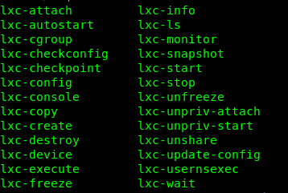

Linux Konteyner (LXC)
LXC, Linux çekirdeği kapsama özellikleri için bir kullanıcı alanı arabirimidir. Güçlü bir API ve basit araçlar aracılığıyla, Linux kullanıcılarının sistem veya uygulama kapsayıcılarını kolayca oluşturmasına ve yönetmesine olanak tanır.
LXC Bileşenleri
- liblxc kütüphanesi
- API için bir kaç dil bağlamaları:
- python3
- lua
- go
- ruby
- haskell
- konteynerları kontrol etmek için bir dizi standart araç
- dağıtım kapsayıcı şablonları
Kurulum
sudo apt install lxcLinux çekirdeğinin gerekli yapılandırmaya sahip olup olmadığını kontrol etmek için aşağıdaki komutu kullanabiliriz;
lxc-checkconfigLXC Komutları
Komutlar hakkındaki detaylı bilgiye erişmek için man lxc
Konteyner İşlemleri
- Konteyner oluşturmak/silmek için
lxc-create -n foo
lxc-destroy -n foolxc-execute -n foo
lxc-start -n foolxc-stop -n foolxc-ls
lxc-ls -flxc-attach -n testlxc-clone -o template_makine -n yeni_makinecd /var/lib/lxc
tar czf makine.tar.gz makinetar zxf makine.tar.gz --numeric-owner -C /var/lib/lxc/lxc-start -d -n makinelxc-stop -n makinelxc-info -n test